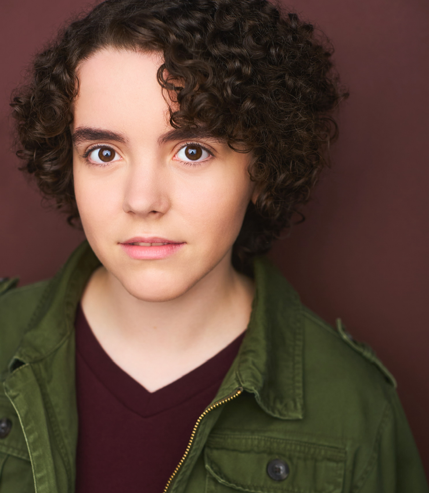

Maddie Ditterline is an Actor and a soon-to-be graduate of Fiorello H. LaGuardia High School for Music and Art & Performing Arts. Previous productions include: MacBeth (LaGuardia High School); Curtains, a Musical Whodunnit; She Kills Monsters; and Hello World (Wingspan Arts); Recovered, a short film (Art and Design). In the fall, Maddie will be attending Arcadia University and will be based in the Philadelphia area.